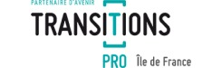

Ils nous ont fais confiance

A Propos
« Il faut toujours prendre le maximum de risques avec le maximum
de précautions. » Rudyard Kipling
Asterion Partners propose des solutions adaptées de management des risques d'organisations publiques ou privées engagées dans des stratégies de déploiement de leur activité dans un environnement en rapide mutation. Selon le degré d'avancement des organisations, ces solutions prennent la forme :
D'un accompagnement à la réalisation d'une cartographie des risques.
De la mise en place d'un outil de pilotage et de suivi, de type SIGR (système d'information de gestion des risques)
De la réalisation d'audits assurantiels permettant de vérifier le degré de maitrise des principaux risques identifiés.
En complément, le cabinet peut également accompagner les organisations sur la valorisation d'opportunités au travers de prestations d'ingénierie de projet dédiées.
Risk management
Une expertise mobilisable sur plusieurs familles de risques
01
Caractériser et évaluer les risques associés à votre activité
ASTERION PARTNERS propose de recenser et déterminer l’ensemble des risques inhérent au fonctionnement de votre organisation et à la conduite de ses missions.
02
Réduire votre exposition aux risques les plus critiques
ASTERION PARTNERS est à votre service pour réaliser des audits ciblés permettant de vérifier ou consolider le niveau de maîtrise des principaux risques pesant sur le fonctionnement de votre organisation ou la conduite de ses missions.
03
Contribuer à votre performance dans le cadre d’une démarche assurantielle de contrôle et de gestion des risques
ASTERION PARTNERS propose d’accompagner votre organisation dans l’acquisition des outils et méthodes nécessaires pour un pilotage efficient des contrôles et la mise en place d’une revue régulière des risques les plus critiques.
04
Appréhender l’avenir de votre organisation par le risk management
Il est fréquent que le déploiement d’un processus d'évaluation des risques s’inscrive dans une démarche de certification externe ou plus généralement dans une politique de compliance couvrant tout ou partie des processus métier.
Risk & Tools
Découvrez notre outil Risk & Tools management.
Risk & Tools Management
Sur la base des risques consolidés, ASTERION PARTNERS met à votre disposition le Système informatisé de gestion des risques Risk&Tools Management pour une gestion rationnelle et transparente des principales vulnérabilités de votre organisation et des mesures de maîtrise associées.
Champ d'action
Découvrez un ensemble de services pouvant être réalisés
01
Préparation, construction et suivi de la cartographie des risques
ASTERION PARTNERS est à vos côtés pour vous accompagner dans la mise en place de la cartographie des risques de votre organisation.
02
Mise en place et conduite du contrôle interne
ASTERION PARTNERS est en capacité de modéliser et documenter et les dispositifs de contrôle interne concourant à renforcer le degré de maîtrise des risques identifiés.
03
Réalisation d’audits ciblés
ASTERION PARTNERS est à votre service pour la conduite de missions d’audit répondant précisément à vos besoins particuliers et spécifiquement adaptés au contexte de votre organisation.
04
Ingénierie de projet
ASTERION PARTNERS peut fournir une prestation d’ingénierie de projet pour la mise en place de solutions organisationnelles intégrées répondant à des prescriptions exigeantes en termes d’objectifs quantitatifs, de niveau de qualité attendu, de délais impartis.
Notre offre de service
Asterion Partners vous propose un ensemble de
3 Pack Assurantiel
Asterion Partners s’attache à créer une offre d’accompagnement de grande qualité et exactement adaptée à vos besoins.
A cet effet, nous proposons une offre socle pour la mise en œuvre d’une démarche assurantielle complète qui couvre notre cœur de métier.
Cependant et pour satisfaire toute demande particulière, nous avons également mis en place une offre complémentaire pour apporter des solutions sur-mesure à forte valeur ajoutée.
Nous Contacter
Asterion Partners sera à votre écoute afin de répondre au mieux a vos demandes
Asterion Partners®
Asterion Partners est un cabinet de conseil français spécialisé dans le management des risques d’organisations publiques ou privées. Il met son expertise à votre disposition pour déployer une maitrise optimale sur l’ensemble des risques qui pèsent sur votre structure et il vous fournit un appui à la mise en œuvre des financements européens.
FAQ
Les questions les plus fréquemment posées.

Quels sont les trois lignes de défense d’une démarche de maîtrise des risques ?
Toute organisation qui
souhaite obtenir une assurance suffisante sur la maîtrise des risques associés à son
fonctionnement et à la conduite de ses missions doit mettre en place trois lignes de défense
:
-
la première ligne de défense correspond aux contrôles et aux tâches de supervision réalisés en continu par les agents en charge des traitements et leur encadrement intermédiaire ;
-
la seconde ligne de défense se confond avec le dispositif de contrôle interne, il s’agit d’un ensemble cohérent de sécurités (sous la forme de méthodes, de règles et de procédures) contribuant à l'identification et au traitement des principaux risques liés aux activités de l’organisation ;
-
la troisième ligne de défense est le domaine de l’audit interne, soit un processus régulier d’évaluation de la robustesse et de l’efficience des mesures de maîtrise adossées aux risques les plus critiques de l’organisation.
Ces trois lignes sont mises en place simultanément et interagissent pour
réunir les conditions d’une gestion pleinement sécurisée du capital
organisationnel.
Elles permettent de donner à la gouvernance, ainsi qu’aux autorités
de régulation et de surveillance habilitées une assurance raisonnable quant à la bonne
utilisation des moyens alloués à l’organisation et sa capacité à atteindre les objectifs
qu’elle s’est fixés.
On parle ainsi d’une démarche assurantielle globale construite
et consolidée sur la durée.
Quelle différence y a-t-il entre le contrôle interne et le contrôle de gestion ?
Le contrôle interne a pour objet de maîtriser les principaux risques
associés au fonctionnement d’une organisation et à la conduite de ses missions.
Le
contrôle de gestion est un système de pilotage mis en œuvre dans le but d’optimiser
performances des services et d'améliorer le rapport entre les moyens engagés et les
résultats obtenus.
Le contrôle de gestion peut ainsi contribuer à la maîtrise de
certains risques relatifs à une utilisation inefficiente des ressources de l’organisation ;
il n’a en revanche pas vocation à couvrir l’ensemble des risques liés à son activité,
ceux-ci couvrant un champ bien plus large étendu aux questions réglementaires,
informatiques, stratégiques, etc…
Pourquoi mettre en œuvre un programme d’audit ?
Sans travaux d’audit réguliers, une organisation n’est pas en mesure de
s’assurer de la robustesse et de l’efficience des mesures de maîtrise adossées à ses
principaux risques.
Par conséquent, elle ne peut pas donner cette assurance à des
auditeurs ou certificateurs externes et plus largement aux différentes parties prenantes
concernées.
Pourquoi réaliser une cartographie des risques ?
Une cartographie des risques a deux fonctions :
-
elle permet d’organiser les risques associés au fonctionnement d’une organisation et à la conduite de ses missions, sans possibilité de doublon ou d’angle mort ;
-
elle permet d’évaluer la criticité de ces risques et leur niveau de maîtrise en utilisant une échelle commune.
La combinaison de ces éléments permet de mesurer la vulnérabilité d’une
organisation dans son ensemble et de rechercher les mesures les mieux appropriées pour la
réduire, selon les choix de la gouvernance.
Est-il possible de réaliser plusieurs cartographies des risques au sein
d’une même organisation ?
Une organisation peut mettre en place simultanément plusieurs cartographies
des risques sur des aspects particuliers de son activité (RH, services informatiques,
domaine réglementaire, comptabilité et finances…).
Toutefois, ces différentes
cartographies ne pourront contribuer à donner une vue globale et efficace sur la qualité de
gestion et la capacité de l’organisation à atteindre ses objectifs stratégiques que dans la
mesure où elles s’inscriront dans un même schéma d’ensemble et pourront être articulées en
conséquence.
Quelles sont les prérequis pour conduire avec succès une démarche de management des risques ?
Trois facteurs essentiels conditionnent le succès d’une démarche de
management des risques.
En premier lieu, la gouvernance
doit être fermement engagée dans le portage de la démarche sur une
durée longue.
En second lieu, le périmètre et les étapes d’élaboration de la
cartographie des risques doivent être examinés en étroite coopération
avec l’ensemble des parties prenantes internes et externes ; les rôles attribués
à chacun doivent être clairement répartis et affichés dès avant le démarrage des
travaux.
En troisième lieu, des moyens suffisants doivent
être mobilisés pour consolider et documenter un dispositif de contrôle interne propre à
assurer la maîtrise des risques les plus critiques ; ce dispositif de contrôle interne doit
en outre être régulièrement challengé dans le cadre d’un programme d’audit proportionné aux
besoins et enjeux de l’organisation.
La cartographie des risques a-t-elle vocation à être étendue à des organismes partenaires ou à des opérateurs associés ?
Une organisation a tout intérêt à étendre sa cartographie des risques à ses
organismes satellites ou à des partenaires essentiels à la conduite des missions dont elle
est chargée.
En effet, toute défaillance de leur part est de nature à compromettre
son action et d’empêcher la réalisation des objectifs opérationnels ou stratégiques fixés
par la gouvernance.
L’extension de la cartographie des risques à ces opérateurs
implique la mise en place de mesures de surveillance ou de contrôle appropriées.
Comment peut-on classer les risques d’une organisation ?
Les risques d’une organisation peuvent être classés de deux manières :
-
en les rattachant à un processus métier existant, ceux-ci étant rattachés aux fonctions de gouvernance, aux fonctions support ou aux fonctions de réalisation ;
-
en les associant à des objectifs spécifiques, qui peuvent être confondus avec le bon fonctionnement du processus métier auquel il sont rattachés (il s’agit de risques dits « endogènes ») ou être au contraire plus étendus (on parle alors de risques transverses).
Ce double rattachement permet de piloter les risques du point de vue de la stratégie globale de l’organisation tout en positionnant exactement les mesures de maîtrise afférentes.
Les risques peuvent-ils être aussi des opportunités ?
On peut entendre par « opportunité » la possibilité de traiter un risque non
pas seulement de manière défensive mais de manière à favoriser la réalisation des objectifs
de l’organisation sur le moyen et long terme, qu’il s’agisse d’objectifs stratégiques,
opérationnels, financiers, informatiques, RH ou autres.
A titre d’exemple, des
mesures visant à renforcer la sécurité informatique d’une organisation peuvent contribuer à
une refonte de son architecture SI qui permettra elle-même de mieux répondre aux besoins
métiers présents des équipes et à leurs évolutions.
Comment se définit un risque ?
Un risque se définit comme un événement potentiel susceptible d’affecter le
fonctionnement de l’organisation ainsi que la conduite de ses missions.
Cet événement
est ainsi caractérisé par des causes et des conséquences particulières.
A chaque
risque sont également associées des mesures de maîtrise préventives ou curatives dont
l’objet est respectivement d’en prévenir la survenance ou d’en limiter l’impact.
Le
responsable en charge de la mise en œuvre de ces mesures est dit « propriétaire du risque ».
Comment se mesure un risque ?
Un risque se mesure avec trois valeurs : sa probabilité (établie sur un pas de temps pertinent), son impact et son degré de maîtrise.
La
criticité d’un risque est une valeur mixte combinant sa probabilité et son impact.
La vulnérabilité d’une organisation au risque est le rapport de sa
criticité à son degré de maîtrise.
Quels sont les principaux acteurs d’une démarche de management et contrôle des risques ?
Quatre types d’acteurs doivent être mobilisés au sein de l’organisation pour mener à bien la démarche et en recevoir tous les bénéfices attendus en termes de qualité de gestion et de performance de l’organisation :
-
La gouvernance est en charge des orientations stratégiques en matière de pilotage des risques, il lui revient notamment de déterminer le niveau de maîtrise souhaité pour les risques les plus critiques, au regard de ses objectifs prioritaires et d’éventuelles contraintes externes particulières ;
-
Le manager des risques est en charge du déploiement et de l’actualisation de la cartographie des risques de l’organisation, il s’assure également de la mise en place d’un dispositif de contrôle interne propre à traiter adéquatement les risques les plus critiques, soit en diminuant leur probabilité (mesures de maîtrise préventives) soit en limitant leur impact (mesures de maîtrise curatives) ;
-
Les services métier propriétaires des risques ont la charge au quotidien de la mise en œuvre des mesures de maîtrise associées à leurs activités particulières, ils ont en outre la charge de mener à bien tout plan d’action visant à restaurer ou renforcer de l’efficacité mesures de maîtrise existantes ;
-
L’auditeur interne vérifie régulièrement l’efficience du dispositif de maîtrise des risques existants, à cet effet il teste la robustesse des dispositifs de maîtrise adossés aux risques les plus critiques et le cas échéant propose un redéploiement des moyens de contrôle en vue de leur utilisation optimale.
Vous avez une question supplémentaire ?
Contactez-nous par mail.